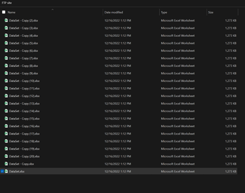
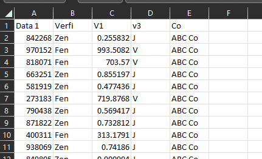
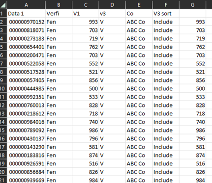
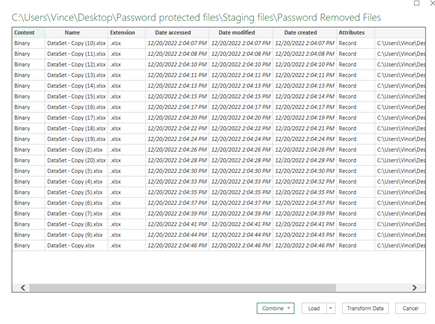
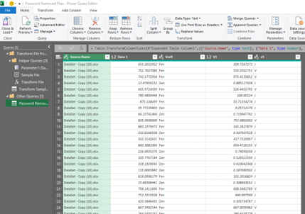
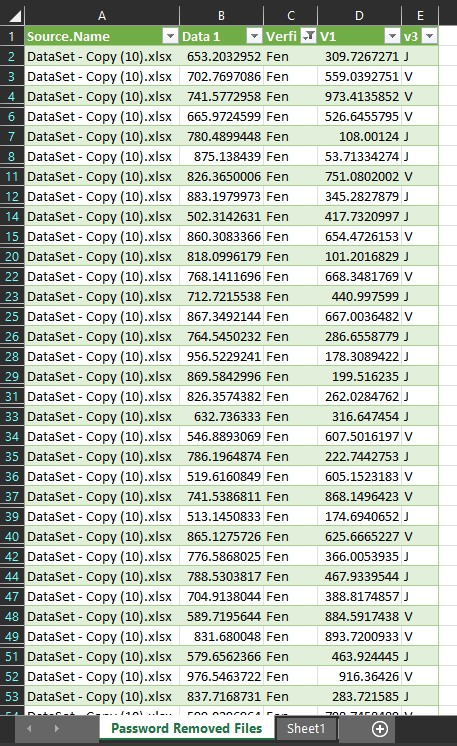
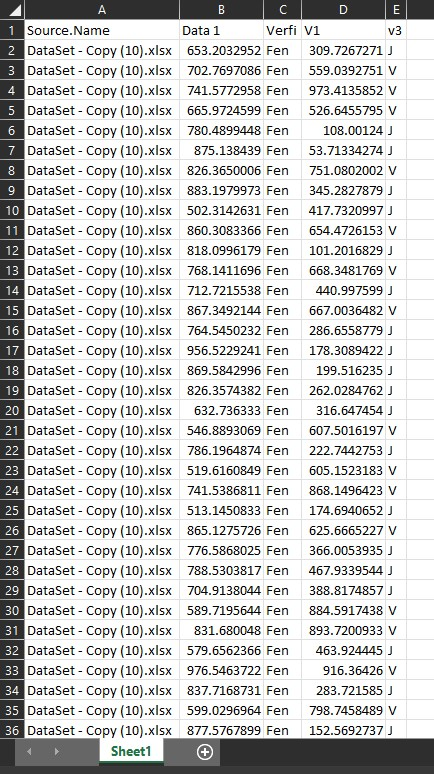

Note: All sensitive data has been removed from this document to protect privacy. The data within the cells have factitious values. The processing time and logic remain true.
To upload shareholder data to meet regulatory requirements. As part of this process, we are obligated by law to obtain specific information relating to shareholders from our competitor. Once we have obtained the necessary data, we will carefully scrub and format it before uploading it to ensure accuracy and compliance.
The process is manual, due to competing priorities, completing the entire process can take anywhere from 2 to 5 days. Additionally, the row range of each Excel spreadsheet can vary greatly, with some containing 2,500 rows and others containing up to 80,000 rows.
Using Excel, VBA and power query this process was streamlined to be completed in 15 minutes. A time savings of 2 to 5 days of manual work.
The old process of completing this task is below. If you would like to skip ahead to the part that I improved, please click here.
The file(s) are sent to us using FTP (File Transfer Protocol) the password is the same for each file, for the sake of this writing it’s Password see image 1 below.
Image 1: Mock FTP folder
Open the file and input the password, for the sake of this reading it’s Password. The file headers are few but important. Column A houses the account number, Column B has exclusions, Columns C & D has verifiers & column E has the company name.
The account number must be 12 digits, so we must reformat the data in column A to show all 12 digits. This is done by highlighting the data in column A, right clicking, go to format cells select custom, then in the “type” text box enter 12 zeros, this will format the highlighted data to this format. In column B sort and remove the term Zen as this data isn’t relevant for our purposes. In column C we need to only include values higher than or equal to 500, anything lower must be excluded. This can be done by using an IF statement. In cell F1 rename the header as “V3 sort”, then in cell F2 insert the following IF formula “=IF(C2>=500,"Include ","Remove")”. Drag this formula all the way down to the last row. Then, in column D, anything that’s listed as “J” needs to be removed from the file, this is done with an additional filter. Lastly, we need to drop the fractional amounts in column C, this can be done using an INT function, in cell G2 place the following function “=INT(C2)” and drag this down to the last row on column C. Once completed, highlight from G2 to the last cell and paste the values in column C. Lastly, we need to copy and paste all the remaining values remaining onto another spreadsheet to upload.
An example of what the file looks like prior to removing columns F & G
This process continues for each file in the FTP folder and once completed we remove column F titled “V3 sort” and column G prior to submitting for upload.
As previously mentioned, the files are transferred to us via FTP (File Transfer Protocol), with the same password for each file. For the purpose of this guide, let's assume the password is "Password". The first step is to create a folder for processing the work. You can name the folder anything you like, as the name won't affect the process. Within this main folder, create two subfolders called "source files" and "staging files". The "source files" folder is where you'll keep the original files to maintain their integrity, while the "staging files" folder is where you'll process the data. Once you're done, all files should be in both the "source files" and "staging files" folders. Since you'll be processing the files in the "staging files" folder, begin the process from there.
To begin, we must first unlock all Excel files. This can be efficiently achieved by utilizing Visual Basic Applications (VBA). To get started with VBA, please visit the VBA Getting Started page. Begin by opening a new Excel file on your desktop and navigating to the Developer tab in the Excel Ribbon. In the event that the Developer tab is not visible in Excel, you can enable this feature by following this guide (how to enable VBA).
Next, we would select Visual Basic, followed by clicking "Insert" and then "Module." Once this process has been completed, your screen should resemble the following.
Enter the vba code below into the module.
'Used to remove passwords in a folder. Just need to adjust the code with the updated password. This also places the unlocked files into a new folder named "Password Removed Files".
Sub test()
Dim WB As Workbook
Dim xFd As FileDialog
Dim xFdItem As Variant
Dim xFileName As String
Set xFd = Application.FileDialog(msoFileDialogFolderPicker)
If xFd.Show = -1 Then
xFdItem = xFd.SelectedItems(1) & Application.PathSeparator
xFileName = Dir(xFdItem & "*.xls*")
MkDir xFdItem & "\Password Removed Files"
Do While xFileName <> ""
Set WB = Workbooks.Open((xFdItem & xFileName), Password:="Password")
WB.SaveAs FileName:=xFdItem & "Password Removed Files\" & xFileName, FileFormat:=51, Password:="", WriteResPassword:="", _
ReadOnlyRecommended:=False, CreateBackup:=False
WB.Close True
xFileName = Dir
Loop
End If
End Sub
To proceed, simply click on the "Run" button. This action will initiate the file explorer, prompting you to select the designated folder that requires password removal. Upon executing the code, all Excel files within the batch will be successfully unlocked, and a new folder named "Password Removed Files" will be automatically created to contain all the modified files.
Moving forward, it is essential to know how to extract the results from the Excel files, especially considering that each file may contain between 2,500 to 80,000 rows of data. Fortunately, we can leverage the capabilities of Power Query to extract the details of all Excel files. To achieve this, follow the steps outlined below.
Open a new blank Excel file and navigate to the "Data" tab on the ribbon. From there, click on "Get Data," followed by "From File" and then "From Folder." This will open up the file explorer, where you can navigate to the "Password Removed Files" folder and select "OK." At this point, the query will load and Excel will provide a recommended query based on the data. It should resemble the image below.
Next, click on the "Combine" arrow located under the "Combine & Transform Data" section. From there, select "Combine and Transform Data." Then, choose "Sheet1" and click "OK." You should see a pop-up window similar to the following.
Finally, click on "Close & Load" on the upper left side of the screen. After your query runs, sort cloumn C to only show "Fen", be sure to save the file after it loads, as it will be used for future third-party files. You can name the file "Query 3rd Party 12-20-22" or another relevant name. After this is completed the screen should look like the following below.
Then copy and paste the values from this file into a separate excel file for uploading. It should look like the following image below.
To prepare this file for upload, we can employ the previously mentioned old fashioned approach, although it may prove time-consuming. Alternatively, we can streamline the process by utilizing VBA to develop a macro that will perform the necessary steps.
NEED TO INSERT VBA HERE AND REVISE THE EXCEL FILES IN THE QUERY TO INCULDE THE COMPANY NUMBER
After the data has been combined, we need to cleanse our data since a lot of data that is transmitted to us doesn’t get used. A simple sort to identify the outliers and remove them from the list is required. To do this select the sort option in excel, then Restrict the search to Items on column A that start with “C-XXXX”, “B-xxxx” & “Z-XXXX”. Then apply an additional cross filter in column D for values of “Y”.
This file had now been processed and ready for processing, be sure to copy the file to a new excel file for processing with our uploading team.